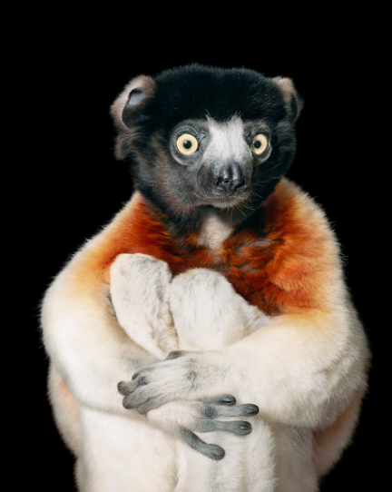
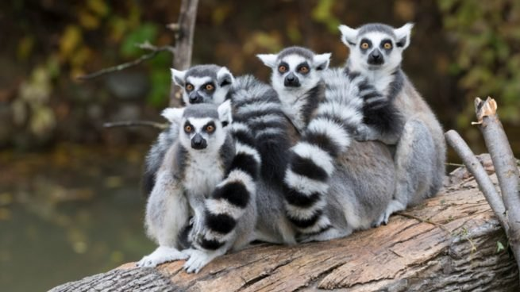

Un grito de ayuda Solo queda el 10% de los bosques históricos de Madagascar, los cuales sustentan a estos lémures en peligro crítico. Con una gran pasión por el néctar, se cree que los lémures son los polinizadores más grandes del mundo. A diferencia de la mayoría de los primates, dan a luz a grandes camadas, por lo que prosperan en cautiverio, donde las tasas de supervivencia son altas. Pero debido a que han sido criados a partir de un grupo genético muy pequeño, las reintroducciones posteriores entrañan muchas complicaciones. Su conservación se logrará cuando simplemente los dejemos en paz en un dosel de selva virgen.

Lémur rufo blanco y negro del este de Madagascar
Objetivo de los cazadores furtivos El lémur rufo blanco y negro del este de Madagascar tiene una de las voces más fuertes de todos los primates del mundo. Sin embargo, estas llamadas de alarma se han convertido en una responsabilidad peligrosa, ya que los cazadores furtivos pueden cazar a los lémures con facilidad para obtener su carne.
